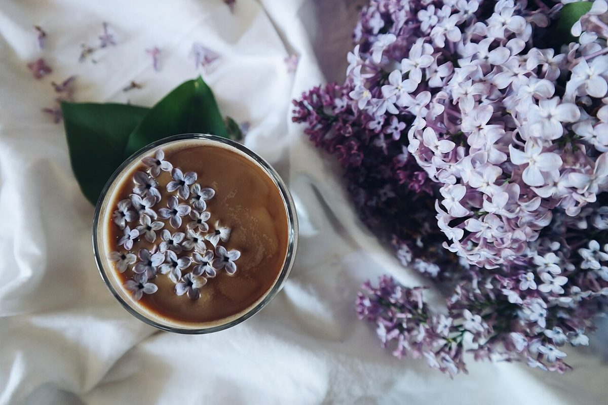

B1 / 口コミ
帯のひとこと
カフェという業種から自然に想像できる声を、制作側が創作したものです。
以下は制作側が考えた創作のイメージ例で、実在のお客様の投稿ではありません。実際の口コミ・評価とは関係ありません。
静かな音楽みたいに、気持ちが落ち着く時間を過ごせそうなお店です。仕事帰りにふらりと寄って、ひと息つきたくなります。
本を一冊持って行って、窓の近くでゆっくりしたい。ひとりでも入りやすそうな雰囲気だと思います。
友人との待ち合わせに使いたくなる場所です。会話の合間に、カップを置く音まで心地よく聞こえそうです。
